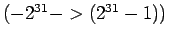
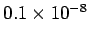
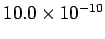
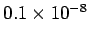
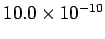
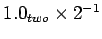
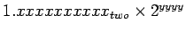
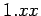

นอกเหนือจากการคำนวณเลขจำนวนเต็มที่มีเครื่องหมายหรือไม่มีเครื่องหมายแล้ว คอมพิวเตอร์ MIPS ยังรองรับการคำนวณเลขทศนิยมหรือเศษส่วน ซึ่งทางคณิตศาสตร์เรียกว่าเลขจำนวนจริง ตัวอย่างของเลขจำนวนจริงได้แก่
ในกรณีสุดท้าย จะสังเกตว่าค่าที่แสดงมีค่ามากกว่าที่จะแสดงได้ในตัวแปรที่เห็นจำนวนเต็มขนาด 32 บิต ที่ใช้ในคอมพิวเตอร์ MIPS
 และการนำเสนอตัวเลขทางด้านหลังของสองตัวอย่างสุดท้าย เรียกว่า Scientific Notation ที่มีเพียงหลักเดียวก่อนจุดทศนิยม ลักษณะนี้เรียกว่า Normalized Number ที่มีเพียงหลักเดียวก่อนหน้าจุดทศนิยม ตัวอย่างเช่น
 เป็นตัวเลข Normalized แต่
 หรือ
 ไม่ใช่ตัวเลขที่ Normalized
เป็นตัวเลข Normalized แต่
 หรือ
 ไม่ใช่ตัวเลขที่ Normalized
สำหรับเลขฐานสองเราสามารถแสดงอยู่ในรูปของ Scientific Notation ได้เช่นเดียวกัน

โดยที่จุดทศนิยมเราเรียกว่าจุด Binary Point แทน Decimal Point ในเลขฐานสิบ การทำให้ตัวเลขเป็นแบบ Normalized ในเลขไบนารี่ เราสามารถเลื่อนบิตไปทางซ้ายหรือขวา ให้มีเพียงหนึ่งหลักอยู่ทางซ้ายมือของจุดทศนิยมหรือ Binary Point
คอมพิวเตอร์แสดงระบบตัวเลขดังกล่าวโดยมีชื่อเรียกว่าเป็น ``Floating Point'' เนื่องจากเป็นการแสดงค่าที่จุดทศนิยมสามารถเลื่อนไปมาได้ โดยมีรูปแบบเป็น

การที่ใช้ Scientific Notation ในการนำเสนอตัวเลขมีข้อดี คือ 1) เป็นรูปแบบเดียวกันสำหรับแลกเปลี่ยนเลขทศนิยม 2) การคำนวณต่างๆ ที่เป็นระบบเลขทศนิยมสามารถใช้ตัวเลขในลักษณะนี้ 3) เนื่องจากรูปแบบตัวเลขที่เป็น Normalized เริ่มจาก  ระบบตัวเลขดังกล่าวเพิ่มความถูกต้องในการคำนวณเนื่องจาก ศูนย์ที่นำหน้าถูกเลื่อนมา และแทนที่ด้วยข้อมูลตัวเลขทางขวามือ